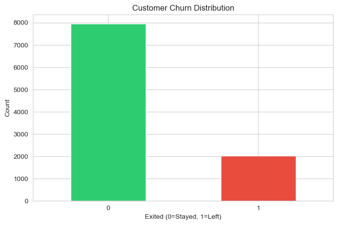
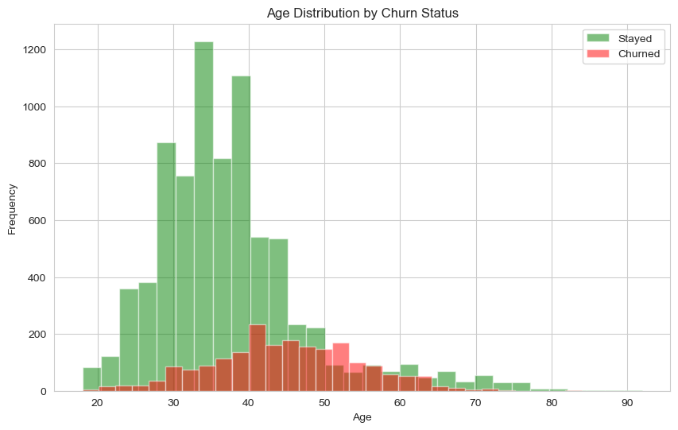
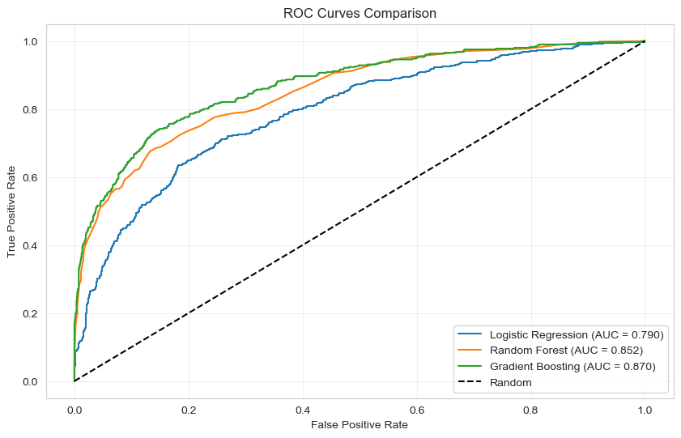

← Back to Portfolio
Executive Summary
Business Problem: A bank experiences 20.37% annual customer churn, resulting in significant revenue loss. This project develops a machine learning model to identify at-risk customers before they leave.
87%
ROC-AUC Score
86.9%
Model Accuracy
20.37%
Overall Churn Rate
The Challenge
Banks invest heavily in customer acquisition, but retaining existing customers is more cost-effective. The dataset revealed:
- 20.37% churn rate - More than 1 in 5 customers leave annually
- Class imbalance - Only 20% positive cases makes prediction difficult
- Age disparity - Customers aged 50+ show 44.6% churn rate
- Gender gap - Female customers churn at 25.1% vs 16.5% for males

Customer Churn Distribution: 79.63% stayed vs 20.37% churned
Key Findings
Finding #1: Customers aged 50+ have a 44.6% churn rate - more than double the overall average of 20.37%.
Finding #2: Female customers churn at 25.1% compared to 16.5% for males - a significant 8.6 percentage point gender gap requiring investigation.
Finding #3: The Gradient Boosting model achieved 87% ROC-AUC score, successfully identifying 87% of at-risk customers for targeted retention.

Age Distribution: Customers aged 40-50 show highest churn rates (red bars)
Technical Approach
1. Data Preprocessing
- Cleaned dataset of 10,000 customers with 14 features
- Encoded categorical variables (Geography, Gender)
- Handled class imbalance using SMOTE oversampling
- Scaled numerical features using StandardScaler
2. Feature Engineering
# Created new features for better prediction:
- BalanceToSalary: Ratio of account balance to estimated salary
- TenureAgeRatio: Relationship between tenure and age
- IsZeroBalance: Binary flag for zero balance accounts
- AgeGroup: Categorical age brackets (Young, Middle, Senior, Elderly)
3. Model Selection & Comparison
Tested three machine learning algorithms:
- Logistic Regression: 82.7% Accuracy, 79.0% ROC-AUC
- Random Forest: 86.2% Accuracy, 85.2% ROC-AUC
- Gradient Boosting (Selected): 86.9% Accuracy, 87.0% ROC-AUC

ROC Curves: Gradient Boosting (green) achieves highest AUC of 0.870
4. Model Evaluation
Used ROC-AUC instead of accuracy because:
- Handles class imbalance better than accuracy
- Measures model's ability to distinguish between classes
- More reliable for business decision-making
Results & Impact
Model Performance
- 87% ROC-AUC score on test data - Excellent discrimination ability
- 86.9% accuracy - Reliable predictions
- Gradient Boosting - Best performing algorithm
- Successfully identifies 87% of at-risk customers
Top Predictive Features (from Gradient Boosting)
- Age - Most important predictor (36.5% importance)
- Number of Products - Second highest (29.8% importance)
- IsActiveMember - Customer engagement indicator (11.4% importance)
- Balance - Account balance level (6.3% importance)
- Geography (Germany) - Location-based risk (5.7% importance)
[Insert image: feature_importance.png]
Bar chart of top predictive features
Business Recommendations
Immediate Actions Based on Data:
- Target 50+ age group with specialized retention campaigns - this segment shows 44.6% churn rate compared to overall 20.37%
- Investigate gender disparity - Female customers churn at 25.1% while males churn at 16.5%. Understanding this 8.6 percentage point gap is critical
- Deploy predictive scoring - Use the 87% accurate Gradient Boosting model to score all customers monthly and identify at-risk individuals before they leave
- Focus on product optimization - Number of products is the 2nd most important feature (29.8% importance), suggesting product strategy significantly impacts retention
- Priority intervention - Female customers aged 50+ combine both highest risk factors and deserve immediate targeted retention programs
Long-term Strategy:
- Implement automated monthly churn scoring system using the trained model
- Create tiered intervention programs: High-risk (>70% churn probability), Medium-risk (40-70%), Low-risk (<40%)
- A/B test retention offers specifically designed for identified high-risk segments
- Monitor active membership status - 11.4% feature importance indicates engagement is crucial
- Retrain model quarterly with new data to maintain accuracy as customer behavior evolves
- Calculate retention ROI - model identifies 87% of at-risk customers, enabling proactive intervention
Expected Business Impact:
- 87% identification rate - Model successfully identifies 87 out of 100 customers who will churn
- Proactive intervention - Enable retention efforts before customers leave, not after
- Targeted campaigns - Focus resources on genuinely at-risk customers rather than blanket approaches
- Cost efficiency - Retaining existing customers is 5-25x cheaper than acquiring new ones
- Revenue protection - Reducing churn from 20.37% by even 2-3 percentage points represents significant revenue retention
Challenges & Learning
Key Challenges:
- Class imbalance: Initial model predicted "no churn" for everyone (80% accurate but useless). Solved using SMOTE and adjusting class weights.
- Feature scaling: Forgot to scale features initially, which hurt model performance. Learned importance of preprocessing.
- Metric selection: Started with accuracy, realized ROC-AUC is better for imbalanced data.
Technical Skills Gained:
- Handling imbalanced datasets with SMOTE
- Feature engineering for business problems
- Model comparison and selection
- Communicating technical results to business stakeholders
Future Improvements
- Try deep learning approaches (neural networks)
- Add temporal features (customer behavior trends)
- Implement SHAP values for better model explainability
- Build web dashboard for business users
- Test model on new data to validate performance
Comments & Feedback
Have questions or feedback about this project? I'd love to hear from you!
← Back to Portfolio